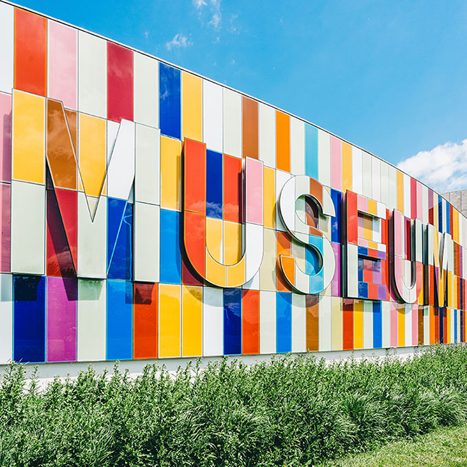

Visit
Location
The museum is located in:
Haugesund, Norway | leet street 1337
Admission
The entrance is free for all.
There are guided tours of the museum that leave every hour. These tours are
70 NOK per person
and include a handy printed guide of the museum. If you would like to organise a guided tour for your group of 6 or more people, please contact us to arrange the tour.Hours
Monday: Closed
Tuesday: 10:00 – 16:00
Wednesday: 10:00 – 16:00
Thursday: 10:00 – 16:00
Friday: 10:00 – 19:00
Saturday: 9:00 – 16:00
Sunday: 9:00 – 13:00
Accessibility
The museum has wheelchair accessibility ramps. It also has audio guides and braille display signs for the visually impaired.
Food and Drink
There is a café attached to the museum where you can get light lunches, soft drinks, coffee, snacks and more.
Shop
Our shop offers a range of memorabilia from the museum as well as great gifts and activity packs that allow you to continue to explore science even after you’ve left the museum.